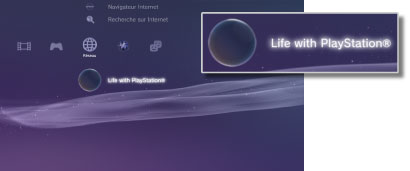

Réseau > Life with PlayStation®
Life with PlayStation®
Life with PlayStation® offre un contenu dynamique basé sur le Web organisé par canaux uniques pouvant être parcourus par horaires et lieux. Vous pouvez bénéficier de différents types de contenus en sélectionnant un canal.
Lorsque vous utilisez Life with PlayStation®, vous participez automatiquement au projet Folding@home™, un projet d'informatique distribuée lancé par l'Université de Stanford.
Démarrage de Life with PlayStation®
Pour utiliser Life with PlayStation®, vous devez d'abord télécharger et installer l'application Life with PlayStation®. Sélectionnez  (Life with PlayStation®) sous
(Life with PlayStation®) sous  (Réseau) pour télécharger l'application. Suivez les instructions affichées pour achever l'installation.
(Réseau) pour télécharger l'application. Suivez les instructions affichées pour achever l'installation.

Conseils
- Pour installer Life with PlayStation®, vous devez disposer de 500 Mo minimum sur le disque dur du système PS3™.
- Si l'icône
 (Folding@home™) s'affiche, vous devez d'abord mettre à jour l'application Folding@home™, puis effectuer la mise à jour vers Life with PlayStation®. Sélectionnez (Folding@home™) sous (Réseau), puis suivez les instructions affichées pour mettre à jour l'application Folding@home™. Ensuite, sélectionnez à nouveau (Folding@home™) sous (Réseau) et suivez les instructions affichées pour effectuer la mise à jour vers Life with PlayStation®.
(Folding@home™) s'affiche, vous devez d'abord mettre à jour l'application Folding@home™, puis effectuer la mise à jour vers Life with PlayStation®. Sélectionnez (Folding@home™) sous (Réseau), puis suivez les instructions affichées pour mettre à jour l'application Folding@home™. Ensuite, sélectionnez à nouveau (Folding@home™) sous (Réseau) et suivez les instructions affichées pour effectuer la mise à jour vers Life with PlayStation®.
Fermeture de Life with PlayStation®
Pour quitter Life with PlayStation®, appuyez sur la touche PS de la manette sans fil, puis sélectionnez  (Quitter) sous (Réseau).
(Quitter) sous (Réseau).
Configuration du démarrage automatique
Life with PlayStation® démarre automatiquement si le système PS3™ demeure en veille pendant une certaine durée. Sélectionnez (Life with PlayStation®) sous (Réseau), appuyez sur la touche  , puis sélectionnez [Démarrage automatique] dans le menu d'options.
, puis sélectionnez [Démarrage automatique] dans le menu d'options.
| Non | Pour que Life with PlayStation® ne démarre pas automatiquement. |
|---|---|
| Après 10 minutes | Pour que Life with PlayStation® démarre après 10 minutes. |
| Après 20 minutes | Pour que Life with PlayStation® démarre après 20 minutes. |
| Après 30 minutes | Pour que Life with PlayStation® démarre après 30 minutes. |
Conseil
[Démarrage automatique] est désactivé si le système PS3™ n'est pas connecté à Internet.
Suppression de Life with PlayStation®
Le programme Life with PlayStation® peut être supprimé du disque dur. Sélectionnez (Life with PlayStation®) sous (Réseau), appuyez sur la touche , puis sélectionnez [Supprimer] dans le menu d'options.
Conseil
Même si le programme est supprimé, l'icône (Life with PlayStation®) ne disparaît pas du menu XMB™.
Vous pouvez sélectionner cette icône pour télécharger à nouveau le programme Life with PlayStation®.